ラボ MCS10 - OAuth 2.0 で MCP サーバーを利用する
このラボでは、Microsoft Copilot Studio で作成したエージェントから、OAuth 2.0 認証を使用して MCP (Model Context Protocol) サーバーを利用します。ここでは、認証なしで HR MCP サーバーを操作した ラボ MCS6 - MCP サーバーの利用 で紹介した概念を基に、同じ HR MCP サーバーに OAuth 2.0 の Authorization Code Flow を構成し、HR 候補者管理ツールへの安全なアクセスを実現します。
Microsoft Copilot Studio でエージェントを構築したい場合は、これらのラボを実施してください
Note
このラボは ラボ MCS6 - MCP サーバーの利用 の内容を拡張したものです。ラボ MCS6 を先に完了していなくても構いませんが、MCP の概念と Copilot Studio でのエージェント作成に慣れていると理解が深まります。
OAuth 2.0 について学ぶ
OAuth 2.0 Authorization Code Flow は、安全な委任アクセスを実現する業界標準の方式です。アプリケーションが資格情報を公開することなくユーザーに代わるトークンを取得できます。詳細は Microsoft identity platform and OAuth 2.0 authorization code flow を参照してください。
このラボで学ぶ内容:
- OAuth 2.0 認証を用いた MCP サーバーの構成方法
- 安全な API アクセスのための Microsoft Entra ID アプリケーション登録方法
- Copilot Studio での OAuth 2.0 Authorization Code Flow の設定方法
- Copilot Studio エージェントからセキュアな MCP ツールを利用する方法
演習 1 : セキュアな MCP サーバーのセットアップ
この演習では、OAuth 2.0 で保護された HR 候補者管理機能を提供する、事前構築済みの MCP サーバーをセットアップします。サーバーは Microsoft .NET ベースで、JWT トークン検証を組み込み、認証されたユーザーのみが HR ツールへアクセスできるようにします。
手順 1: セキュアな MCP サーバーと前提条件の理解
セキュアな HR MCP サーバーは、ラボ MCS6 で使用したサーバーの強化版です。同じツールを提供します:
- list_candidates: 候補者の一覧を取得
- search_candidates: 名前、メール、スキル、役職で候補者を検索
- add_candidate: 新しい候補者を追加
- update_candidate: メールアドレスで既存候補者を更新
- remove_candidate: メールアドレスで候補者を削除
大きな違いは、このバージョンではすべてのリクエストに対し Authorization ヘッダー内の有効な OAuth 2.0 アクセストークンが必須である点です。サーバーは Microsoft Entra ID テナントに対して JWT トークンを検証し、安全なアクセスを保証します。
開始前に以下を用意してください:
- .NET 10.0 SDK
- Visual Studio Code
- Node.js v.22 以上
- Dev tunnel
- アプリケーション登録用の Microsoft Entra 管理センター へのアクセス
手順 2: セキュアな MCP サーバーのダウンロードと確認
このラボでは、事前構築されたセキュア HR MCP サーバーを使用します。サーバーファイルを こちら からダウンロードしてください。
ZIP を展開し、対象フォルダーを Visual Studio Code で開きます。サーバーはすでに OAuth 2.0 セキュリティを実装済みで、設定を行うだけで利用できます。
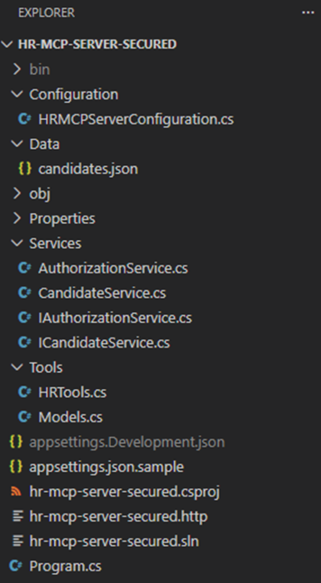
プロジェクト構成の主な要素は次のとおりです。
Configuration:HRMCPServerConfiguration.csが含まれ、OAuth 設定を含む MCP サーバーの構成を定義するフォルダーData: 候補者リストを保持するcandidates.jsonを含むフォルダーServices:ICandidateService.csとIAuthorizationService.csのインターフェイス、および候補者リストの管理とセキュリティ処理を行うCandidateService.csとAuthorizationService.csの実装Tools: MCP ツールを定義するHRTools.csとツールで使用するデータモデルを定義するModels.csappsettings.json.sample: Entra ID 設定を行う際のサンプル構成ファイルProgram.cs: メインエントリーポイント。ここで MCP サーバーが JWT 認証付きで初期化されます。
Info
セキュア MCP サーバーには、Microsoft Entra ID テナントに対して受信トークンを検証する JWT ベアラートークン認証ミドルウェアが含まれています。これにより、有効なトークンを持つ認証済みユーザーのみが HR ツールにアクセスできます。
手順 3: OAuth 2.0 Authorization Code Flow の理解
アプリケーションを構成する前に、このシナリオでの OAuth 2.0 Authorization Code Flow の流れを理解しましょう。
- ユーザー認証: ユーザーが Copilot Studio エージェントを操作して MCP ツールを起動すると、Microsoft Entra ID での認証を求められます。
- 認可コードの発行: ログインが成功すると、Microsoft Entra ID はリダイレクト URI 経由で Copilot Studio に認可コードを送信します。
- トークン交換: Copilot Studio は認可コード (およびクライアント資格情報) を使用してアクセストークンを取得します。
- API へのアクセス: Copilot Studio はアクセストークンを MCP サーバーへのリクエストに含め、サーバーはトークンを検証してからリクエストを処理します。
このフローにより、以下が保証されます。
- ユーザーの資格情報が MCP サーバーに公開されない
- アクセストークンには有効期限とスコープが設定される
- MCP サーバーはユーザーの ID とアクセス許可を検証できる
演習 2 : Microsoft Entra ID アプリケーションの構成
この演習では、HR MCP サーバー (バックエンド) 用と Copilot Studio クライアント (フロントエンド) 用の 2 つの Microsoft Entra ID アプリケーションを登録します。
手順 1: HR MCP サーバー アプリケーション (バックエンド) の登録
ブラウザーで https://entra.microsoft.com を開き、職場アカウントでサインインします。
左ナビゲーションで 1️⃣ App registrations → 2️⃣ + New registration を選択します。
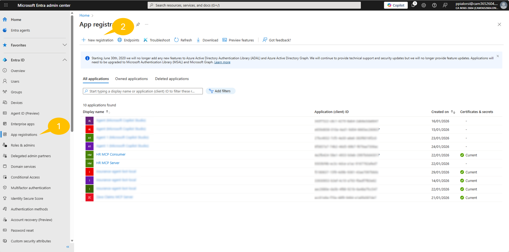
次の設定でアプリケーションを作成します。
- Name:
HR MCP Server
-
Supported account types: Accounts in this organizational directory only を選択
-
Redirect URI: ここでは空欄のまま (必要に応じて後で設定)
Register を選択してアプリケーションを作成します。
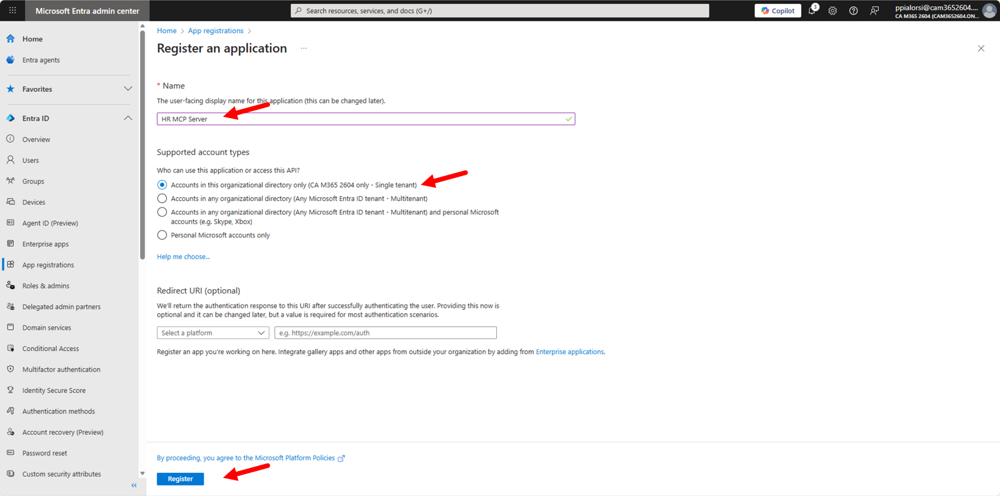
手順 2: HR MCP サーバー アプリケーションの構成
アプリ登録後、クライアント アプリがアクセスできる API を公開するよう設定します。
Expose an API 設定
- HR MCP Server アプリで Expose an API を選択
- Application ID URI の横にある Add をクリック
- デフォルト値 (形式
api://<client-id>) をそのまま使用 - Save を選択
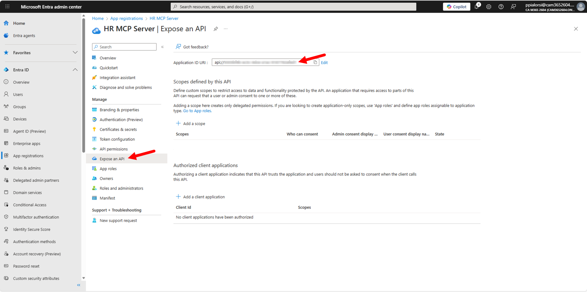
スコープの追加
- Scopes defined by this API で + Add a scope を選択
-
次の設定でスコープを作成:
-
Scope name:
HR.Manage
-
Who can consent?: Admins and users
-
Admin consent display name:
Manage HR Data
- Admin consent description:
Allows managing HR data as an Admin
- User consent display name:
Manage HR Data
- User consent description:
Allows managing HR data as a user
-
State: Enabled
-
Add scope を選択
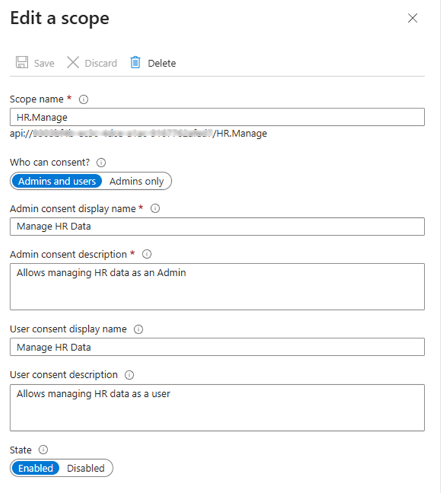
重要な値の記録
Overview ページで以下の値を控えておきます (後ほど使用)。
- Application (client) ID
- Directory (tenant) ID
手順 3: Copilot Studio クライアント アプリケーションの登録
次に、HR MCP サーバーを消費する Copilot Studio クライアントを表すアプリを作成します。
前の手順と同様に Microsoft Entra 管理センターで Applications → App registrations → + New registration を選択し、次を設定します。
- Name:
HR MCP Consumer
-
Supported account types: Accounts in this organizational directory only
-
Redirect URI: 空欄のまま (Copilot Studio が後で提供)
Register を選択して作成します。
手順 4: Copilot Studio クライアント アプリケーションの構成
登録後、必要なアクセス許可と資格情報を設定します。
クライアント シークレットの作成
- HR MCP Consumer アプリで Certificates & secrets を選択
- + New client secret をクリック
-
次を設定:
-
Description:
ClientSecret
-
Expires: 適切な期間 (例: 12 か月)
-
Add を選択
重要: Value はこの時だけ表示されるため、必ず安全な場所に保存してください。
API Permissions の設定
- 左メニューで API permissions を選択
- + Add a permission をクリック
- APIs my organization uses タブを選択
-
HR MCP Server を検索して選択
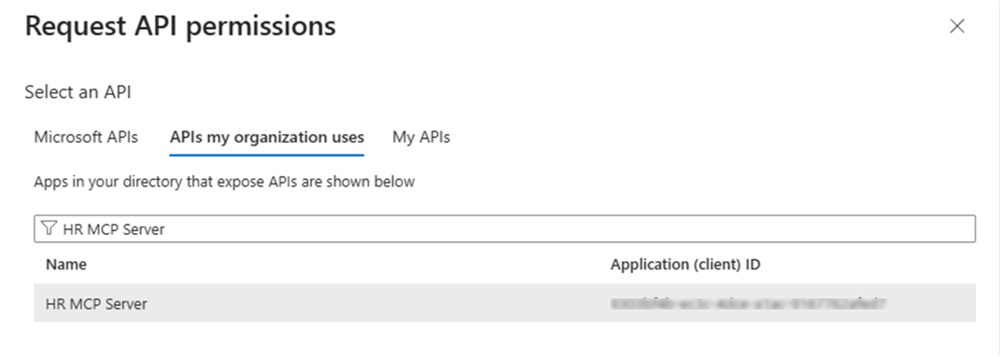
-
1️⃣ Delegated permissions を選択
- 2️⃣ HR.Manage をチェック
-
3️⃣ Add permissions を選択
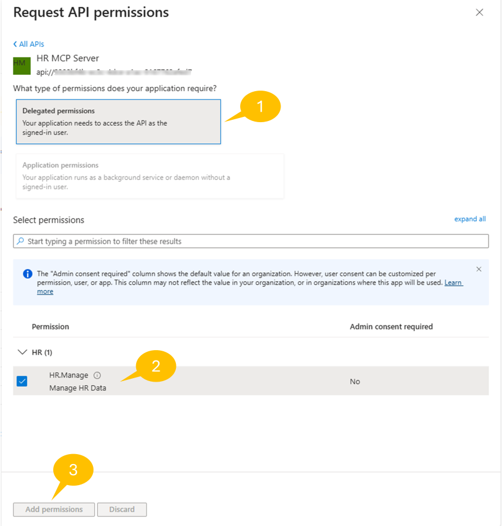
-
さらに Microsoft Graph の権限を追加します。+ Add a permission → Microsoft Graph → Delegated permissions を選択
-
次の権限をチェック:
- openid
- profile
- User.Read
-
Add permissions を再度選択
管理者の同意を付与
- API permissions 一覧で Grant admin consent for [Your Tenant] をクリック
- Yes を選択して確定
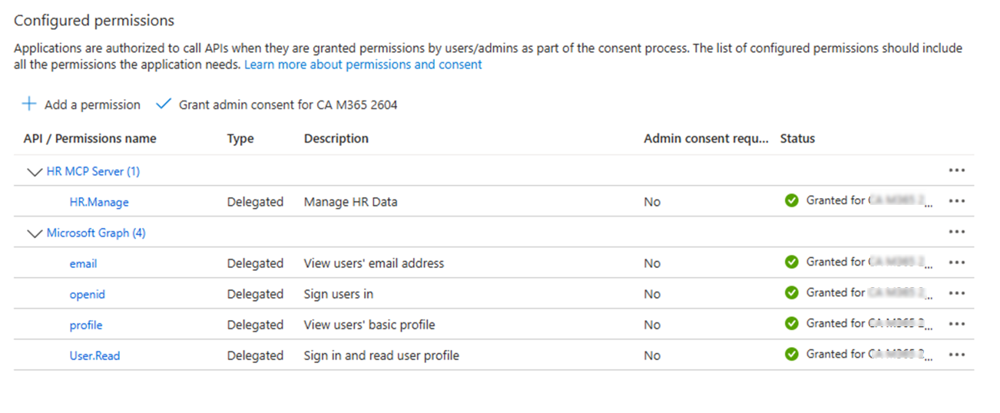
重要な値の記録
クライアント アプリ Overview ページで以下を控えます。
- Application (client) ID
- Client Secret Value (前ステップで保存済み)
手順 5: MCP サーバーの構成と起動
Entra ID の設定を MCP サーバーに反映します。
appsettings.json.sample を appsettings.json としてコピーし、AzureAd セクションを更新します。
{
"AzureAd": {
"Instance": "https://login.microsoftonline.com/",
"TenantId": "[YOUR_TENANT_ID]",
"ClientId": "[YOUR_HR_MCP_SERVER_CLIENT_ID]",
"Audience": "[YOUR_HR_MCP_SERVER_CLIENT_ID]",
"Scopes": "[YOUR_APPLICATION_ID_URI]/HR.Manage"
}
}
プレースホルダーを置き換えます。
[YOUR_TENANT_ID]: HR MCP Server アプリ登録の Directory (tenant) ID[YOUR_HR_MCP_SERVER_CLIENT_ID]: HR MCP Server アプリの Application (client) ID[YOUR_APPLICATION_ID_URI]: HR MCP Server アプリの Application ID URI (例:api://xxxxxxxx-xxxx-xxxx-xxxx-xxxxxxxxxxxx)
ファイルを保存し、MCP サーバーを実行します。
dotnet run
サーバーが起動しリクエスト待機状態になります。以降、有効なアクセストークンのないリクエストは 401 Unauthorized になります。
手順 6: Dev tunnel の構成
dev tunnel を使用して MCP サーバーを公開 URL で公開します。未インストールの場合は こちらの手順 を参照してください。
dev tunnel へログイン:
devtunnel user login
dev tunnel をホスト:
Important
以下の hr-mcp-secured は一意なトンネル名に変更してください。例: 名前が Alex の場合 hr-mcp-secured-alex など。
devtunnel create hr-mcp-secured -a --host-header unchanged
devtunnel port create hr-mcp-secured -p 47002
devtunnel host hr-mcp-secured
「Connect via browser」の URL をコピーして保存します。Copilot Studio の MCP ツール設定および HR MCP Consumer アプリの更新で使用します。
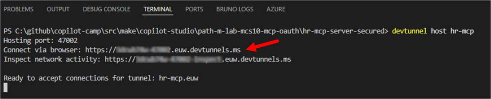
Tip
このラボ全体で MCP サーバーと dev tunnel を起動したままにしてください。再起動が必要な場合は、サーバーに対して dotnet run、トンネルに対して devtunnel host hr-mcp-secured を実行します。
手順 7: Application ID URI と構成の更新
dev tunnel URL が取得できたら、Microsoft Entra ID の HR MCP Server アプリで Application ID URI をデフォルトの api://<guid> から dev tunnel URL に更新します。
Entra ID で Application ID URI を更新
- Microsoft Entra 管理センター に移動
- Applications → App registrations へ
- HR MCP Server アプリを選択
- Expose an API を選択
- Application ID URI の横で Edit をクリック
- 値を dev tunnel URL に置き換え (例:
https://hr-mcp-secured.devtunnels.ms) - Save を選択
URL の形式
末尾にスラッシュを付けず、https://your-tunnel-name.devtunnels.ms の形式にしてください。
appsettings.json の更新
appsettings.json の Scopes プロパティを dev tunnel URL に合わせて更新します。
{
"AzureAd": {
"Instance": "https://login.microsoftonline.com/",
"TenantId": "[YOUR_TENANT_ID]",
"ClientId": "[YOUR_HR_MCP_SERVER_CLIENT_ID]",
"Audience": "[YOUR_HR_MCP_SERVER_CLIENT_ID]",
"Scopes": "[YOUR_DEVTUNNEL_URL]/HR.Manage"
}
}
[YOUR_DEVTUNNEL_URL] を先ほど設定した dev tunnel URL (例: https://hr-mcp-secured.devtunnels.ms) に置き換えます。
最終的な構成例:
{
"AzureAd": {
"Instance": "https://login.microsoftonline.com/",
"TenantId": "xxxxxxxx-xxxx-xxxx-xxxx-xxxxxxxxxxxx",
"ClientId": "xxxxxxxx-xxxx-xxxx-xxxx-xxxxxxxxxxxx",
"Audience": "xxxxxxxx-xxxx-xxxx-xxxx-xxxxxxxxxxxx",
"Scopes": "https://hr-mcp-secured.devtunnels.ms/HR.Manage"
}
}
MCP サーバーの再起動
appsettings.json を保存後、サーバーを再起動します。
- 実行中のサーバーを
Ctrl+Cで停止 - 再度起動:
dotnet run
これでサーバーは、Entra ID で設定した dev tunnel URL を使用してトークンを検証します。
演習 3 : Copilot Studio でのエージェント作成
この演習では、セキュア MCP サーバーを利用する新しい Copilot Studio エージェントを作成します。
手順 1: HR エージェントの作成
ブラウザーで https://copilotstudio.microsoft.com を開き、職場アカウントでサインインします。
以前のラボで作成した Copilot Dev Camp 環境を選択し、Create an agent を選択して新しいエージェントを作成します。
Details セクションの Edit を選択し、次を設定します。
- Name:
HR Candidate Management (Secured)
- Description:
An AI assistant that helps manage HR candidates using a secured MCP server
with OAuth 2.0 authentication for enterprise-grade security
Save をクリックして保存します。
次に Instructions セクションの Edit を選択し、以下を設定します。
You are a helpful HR assistant that specializes in secure candidate management. You can help users
search for candidates, check their availability, get detailed candidate information, and add new
candidates to the system.
All operations require user authentication through OAuth 2.0 to ensure data security and compliance
with enterprise policies.
Always provide clear and helpful information about candidates, including their skills, experience,
contact details, and availability status.
Save をクリックして保存します。
Agent's Model を GPT-5 Chat に変更します。
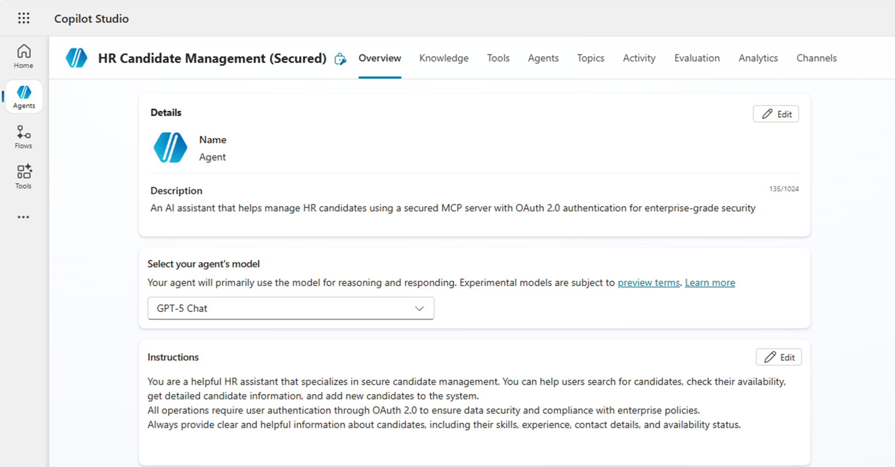
手順 2: エージェント設定の構成
最適なパフォーマンスのため、エージェントのナレッジ設定を構成します。
右上の Settings をクリックし、Knowledge セクションで以下を設定:
- Use general knowledge: off
- Use information from the web: off
Save を選択して確定します。
手順 3: 会話スターターの設定
Overview ページの Suggested prompts セクションに次を追加します。
- Title:
List all candidates- Prompt:Show me all candidates in the HR system - Title:
Search candidates- Prompt:Search for candidates with skills in [SKILL] - Title:
Add new candidate- Prompt:Add a new candidate with firstname [FIRSTNAME], lastname [LASTNAME], email [EMAIL], role [ROLE], languages [LANGUAGES], and skills [SKILLS]
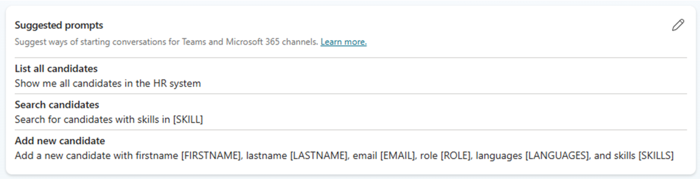
Save を選択して変更を保存します。
演習 4 : OAuth 2.0 付き MCP ツールの登録
この演習では、セキュア MCP サーバーを Copilot Studio エージェントのツールとして OAuth 2.0 認証付きで構成します。
手順 1: MCP サーバー ツールの追加
エージェントで 1️⃣ Tools セクションに移動し、2️⃣ + Add a tool をクリックします。
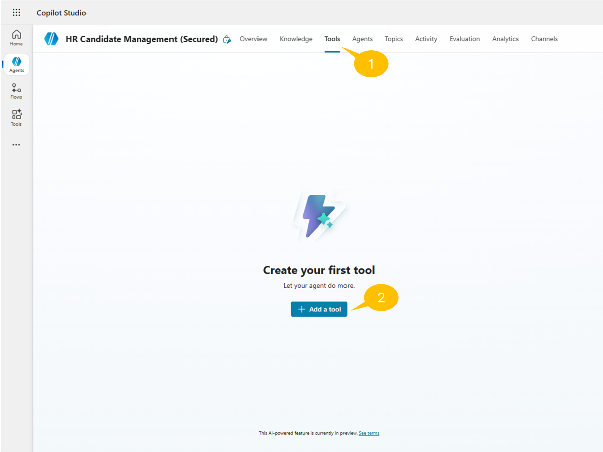
1️⃣ Create new セクションで 2️⃣ Model Context Protocol を選択します。
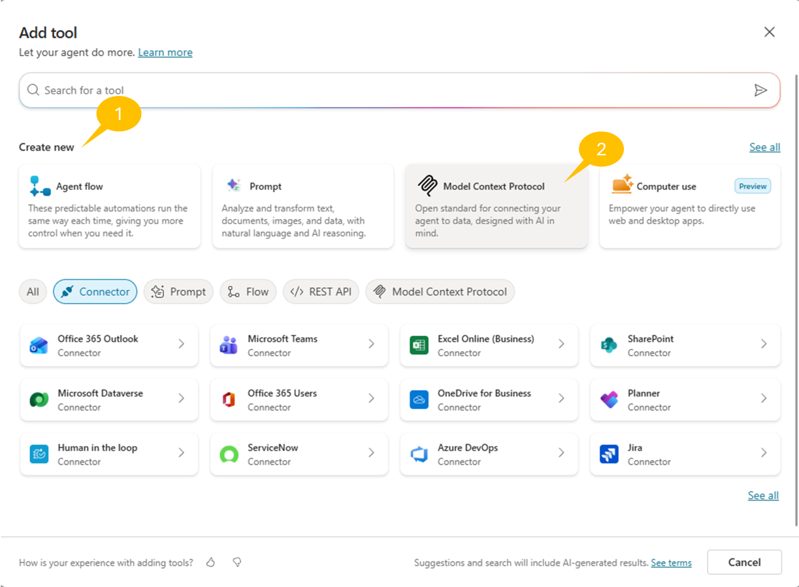
手順 2: OAuth 2.0 認証の構成
次の設定で MCP サーバー接続と OAuth 2.0 を構成します。
【基本設定】
- Server name:
HR MCP Server Secured
- Server description:
Securely manages HR candidates with OAuth 2.0 authentication for enterprise compliance
- URL: 先ほど保存した dev tunnel URL (「Connect via browser」の URL)
【認証設定】
Authentication method として OAuth 2.0 を選択し、Manual を選びます。
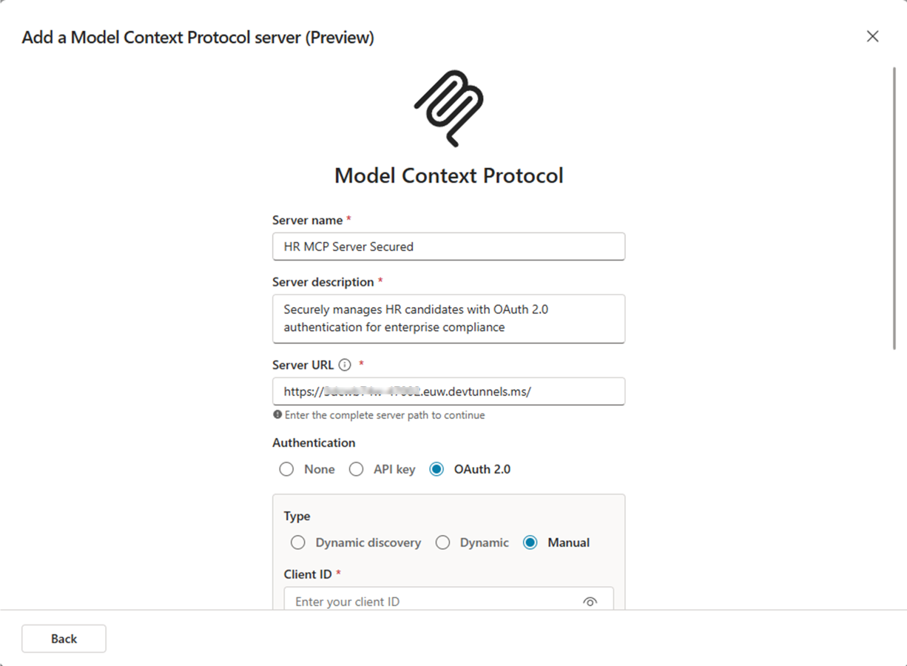
OAuth 2.0 の各項目を入力します。
- Client ID: HR MCP Client - Copilot Studio アプリの Application (client) ID
- Client secret: 保存しておいたクライアント シークレット
- Authorization URL template:
https://login.microsoftonline.com/[YOUR_TENANT_ID]/oauth2/v2.0/authorize
- Token URL template:
https://login.microsoftonline.com/[YOUR_TENANT_ID]/oauth2/v2.0/token
- Refresh URL template:
https://login.microsoftonline.com/[YOUR_TENANT_ID]/oauth2/v2.0/token
- Scopes: スペース区切りで入力
openid profile email
Important
ここで入力するスコープは一時的なものです。後でセキュア HR MCP サーバーに必要な実際のスコープに置き換えます。
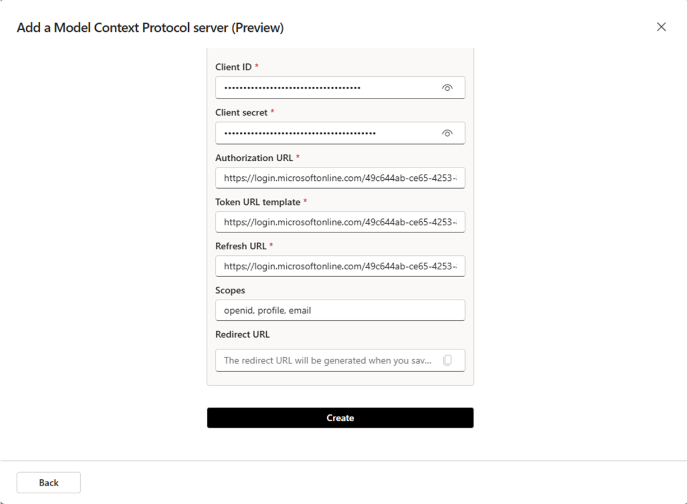
Create を選択して MCP サーバー設定を保存します。
手順 3: Entra ID での Redirect URI 設定
MCP ツール作成後、Copilot Studio が Redirect URL を生成します。この URL を HR MCP Consumer アプリに設定します。
- Copilot Studio で表示された Redirect URL をコピー
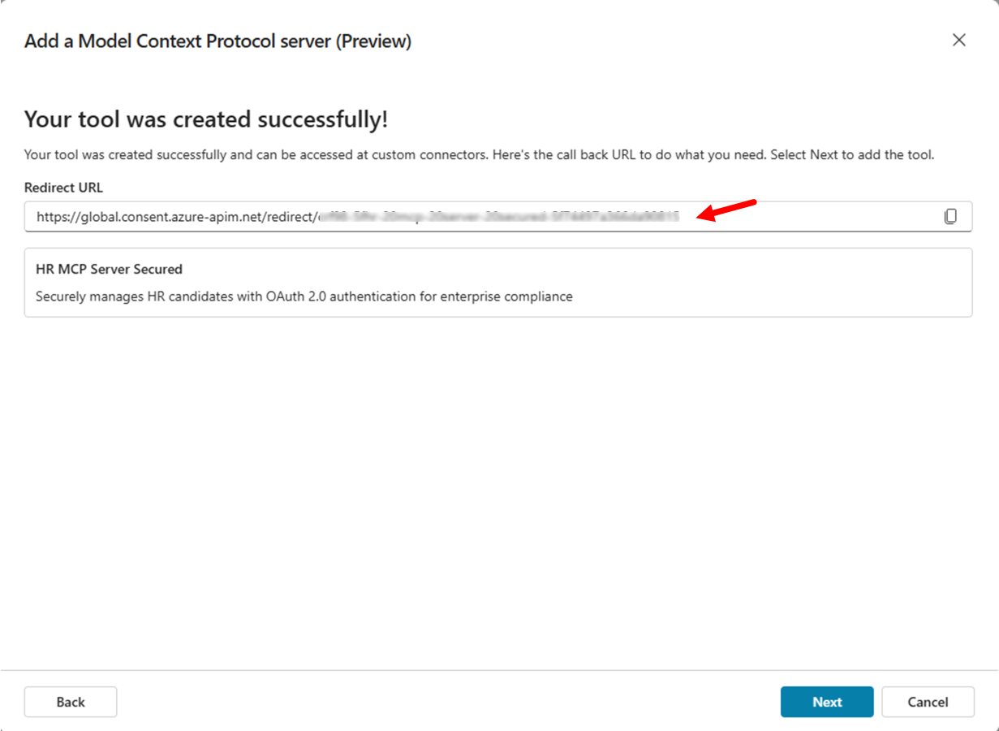
- Microsoft Entra 管理センター へ移動
- Applications → App registrations
- HR MCP Consumer アプリを選択
- Authentication を選択
- + Add Redirect URI → Web を選択
- コピーした Redirect URI を貼り付け
- Configure を選択
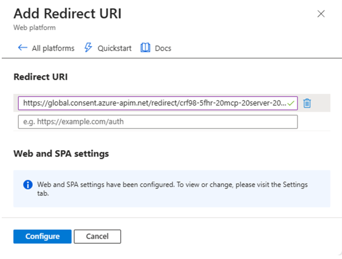
Copilot Studio に戻り、ツール設定を続行します。Next を選択すると接続を求めるダイアログが表示されますが、接続は保留にして次の手順 4 へ進みます。
手順 4: Power Apps コネクタの構成 (オプション)
Info
環境によっては、この手順が必要になる場合があります。Copilot Studio で作成した MCP コネクタは Power Apps にも登録され、追加設定が必要なケースがあります。
- https://make.powerautomate.com にアクセス
- 右上の環境ピッカーで
Copilot Dev Campを選択 - More → Discover all → Custom connectors を選択
- HR MCP Server Secured という名前のコネクタを探し、鉛筆アイコンで Edit
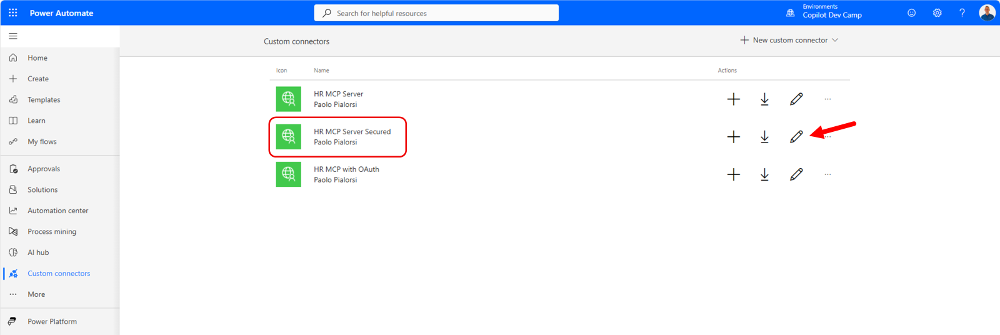
- Security タブを開き Edit を選択
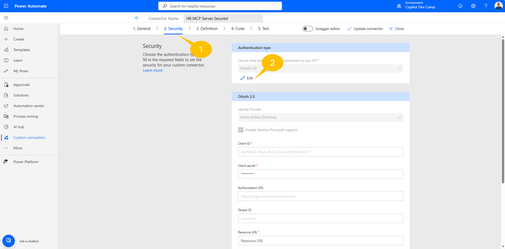
- Client Secret に HR MCP Consumer アプリで取得したシークレット値を入力
- Resource URL に Application ID URI、つまり
[YOUR_DEVTUNNEL_URL](例:https://hr-mcp-secured.devtunnels.ms) を入力 - Scope にカスタム スコープ名 HR.Manage を入力
- 画面上部の Update connector をクリック
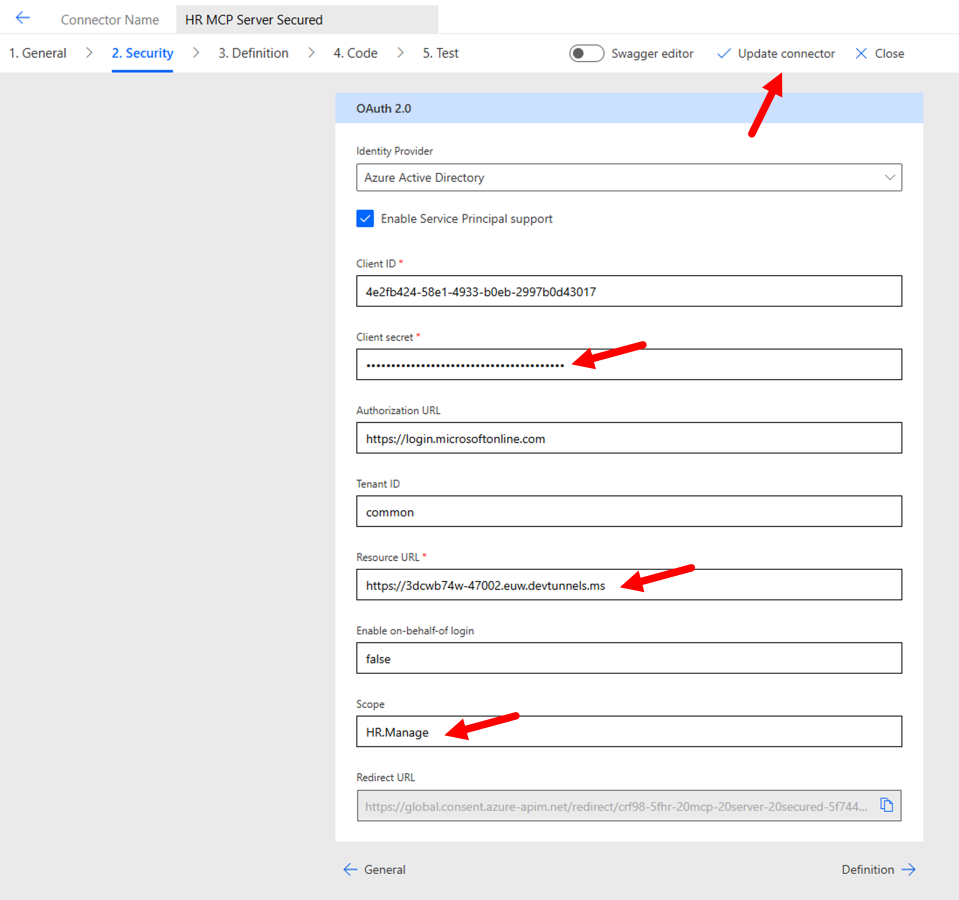
手順 5: MCP ツール構成の完了
Copilot Studio に戻り、MCP ツール構成と接続を完了します。
- MCP ツール設定ダイアログで Connection が Not connected と表示されます
- Not connected をクリックして接続オプションを開き、Create new connection を選択
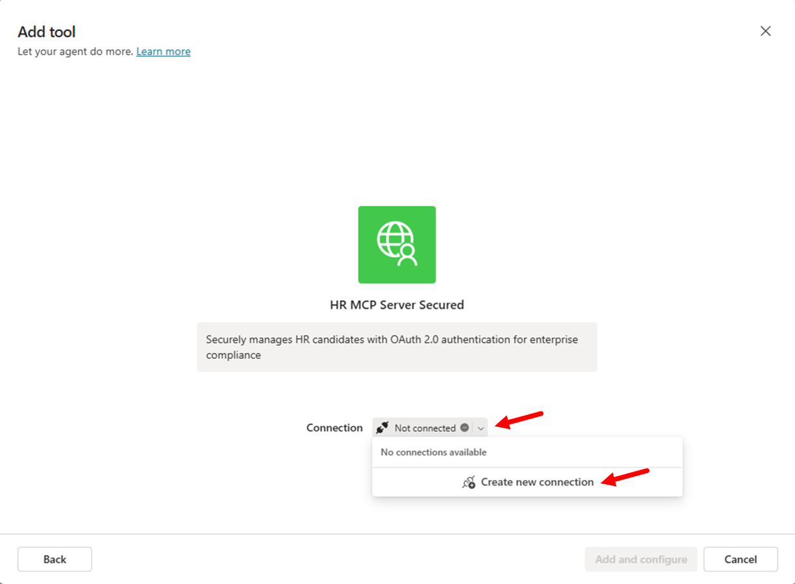
- 表示されたダイアログで Create を選択し、接続作成を開始
- Copilot Studio が Microsoft Entra ID での認証を促します
- 有効なユーザー アカウントを選択または資格情報を入力
- アプリが HR MCP サーバーへアクセスする許可を求められた場合は承認
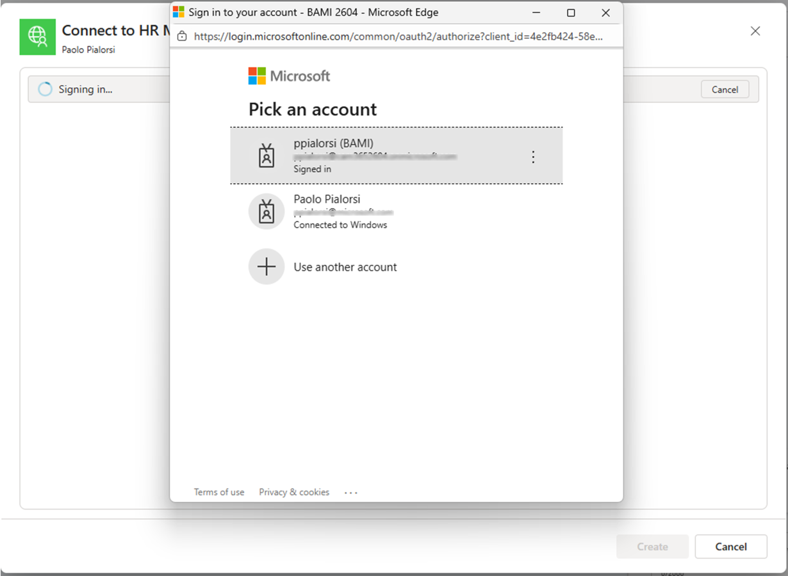
- 認証に成功すると接続が確立され、緑のチェックマークが表示されます
- Add and configure を選択して MCP ツールをエージェントに追加
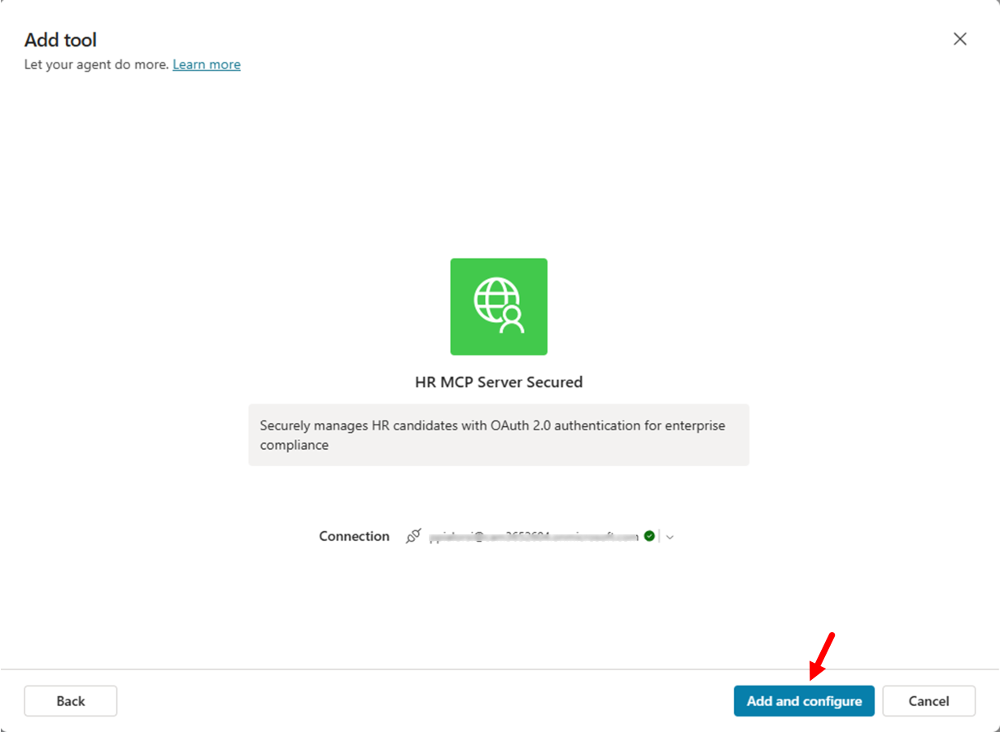
MCP サーバーの設定ページが表示され、利用可能なツールが一覧表示されます。
- list_candidates
- search_candidates
- add_candidate
- update_candidate
- remove_candidate
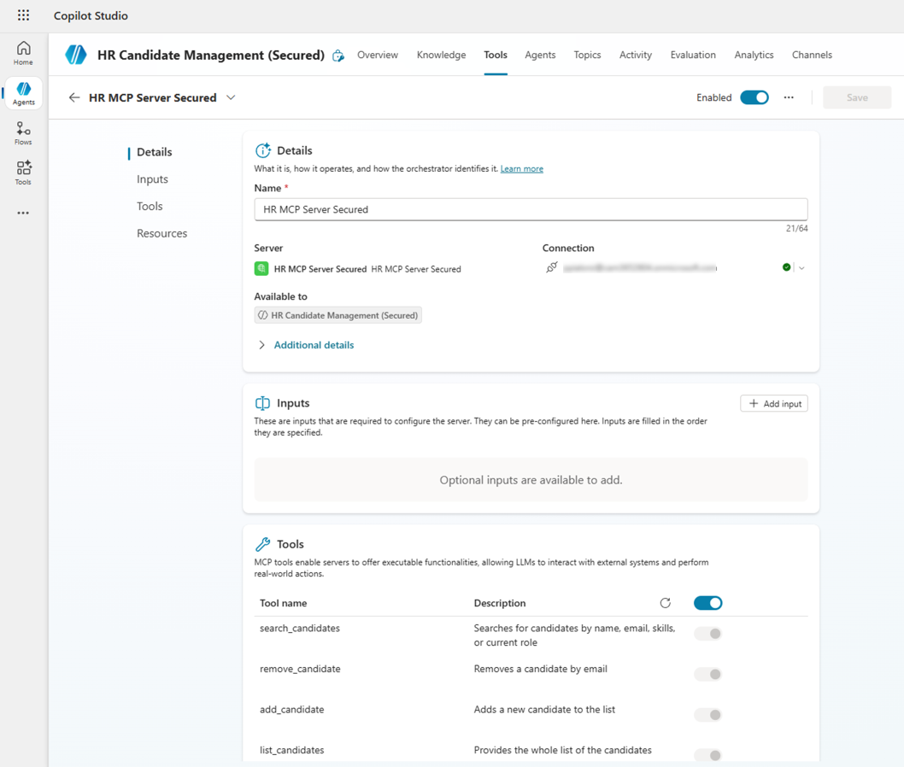
セキュア MCP サーバーの構成が完了しました。テストを行いましょう。
演習 5 : エージェントのテスト
この演習では、エージェントをテストして OAuth 2.0 認証が正しく機能することを確認します。
手順 1: エージェントの発行
テスト前にエージェントを発行します。
- Copilot Studio 右上の Publish を選択
- 発行が完了するまで待機
手順 2: 認証フローのテスト
Copilot Studio のテスト パネルを開き、次のプロンプトを入力します。
List all candidates
初回のセキュア MCP サーバー利用時には、エージェントがユーザーの資格情報を使用して外部サービスへアクセスする Allow の確認が表示されます。Allow をクリックしてください。
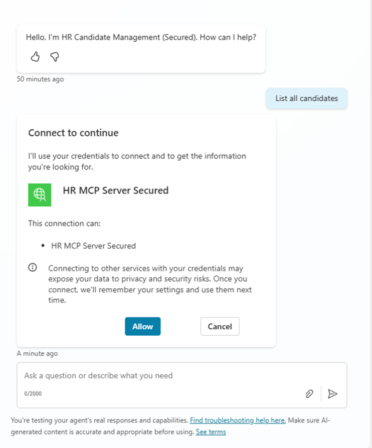
接続されていない、またはトークンが期限切れの場合は Open connection manager が表示されます。その際は以下を実施します。
- Open connection manager を選択
- 新しいタブで接続ページが開くので Connect をクリック
- 職場アカウントでサインイン
- 必要に応じて HR MCP サーバーへのアクセスを許可
- 認証成功後、接続ステータスが Connected になります
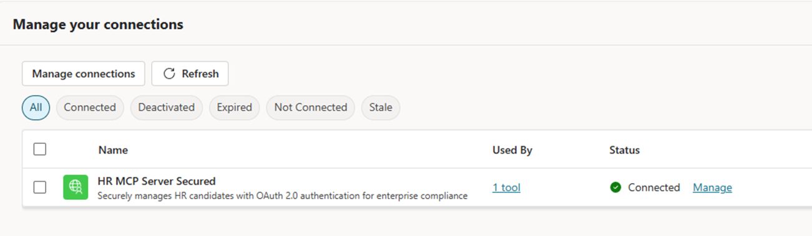
手順 3: MCP ツールのテスト
認証後、プロンプトが処理されます。処理されない場合は再度入力してください。
List all candidates
エージェントはセキュア MCP サーバーへ正常にアクセスし、候補者リストを返すはずです。
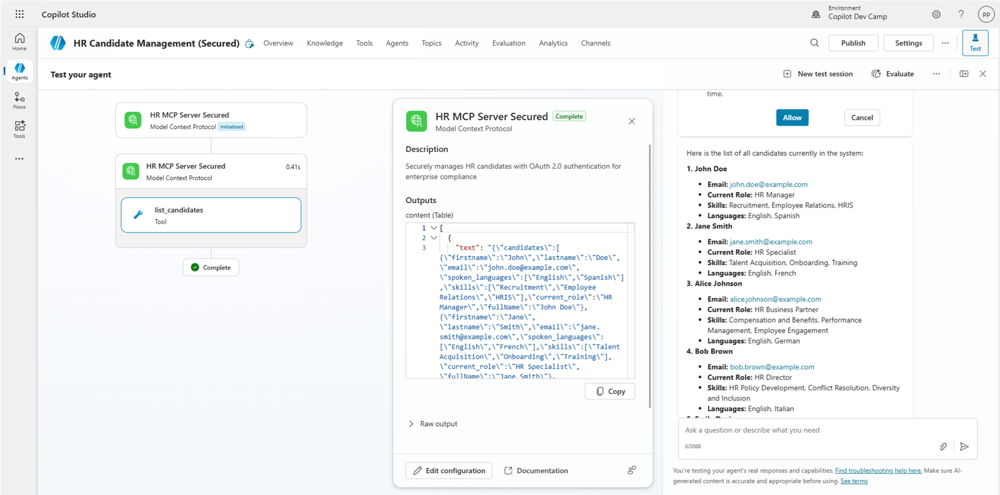
トークン キャッシュ
初回認証後、アクセストークンは一定期間キャッシュされます。トークンが期限切れまたは失効しない限り、毎回認証を求められることはありません。
他のツールもテストしてみましょう。
候補者を検索:
Search for candidates with Training skills
特定の候補者を取得:
Get candidate with email bob.brown@example.com
MCP サーバーのアクティビティ監視
Copilot Studio から MCP サーバーを呼び出すと、.NET アプリケーションである MCP サーバーがターミナルにログを出力します。各ツール メソッドの呼び出しや、リクエストヘッダーに含まれる Authorization: Bearer JWT アクセストークンを確認できます。認証が正しく機能しているかのデバッグに役立ちます。
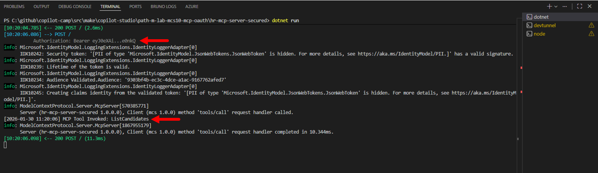
おめでとうございます！
このラボ MCS10 - OAuth 2.0 で MCP サーバーを利用する を完了しました！
このラボでは、次の内容を学習しました。
- OAuth 2.0 の JWT トークン検証を使用した MCP サーバーの構成
- セキュアな API アクセスのための Microsoft Entra ID アプリケーション (バックエンド / クライアント) の登録
- Copilot Studio での OAuth 2.0 Authorization Code Flow の設定
- 企業レベルの認証で保護された MCP ツールの利用
OAuth 2.0 認証を導入することで、HR 候補者管理システムを業界標準のセキュリティで保護できました。これは、データ セキュリティとユーザー認証が重要な本番環境で不可欠なアプローチです。